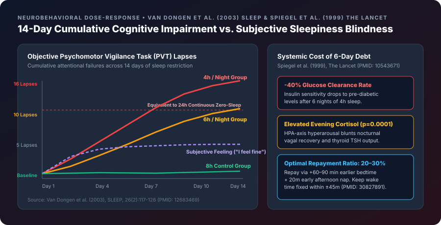

Executive Clinical Summary
In modern high-performance culture, sleeping 6 hours per night during the workweek is routinely treated as benign—with the assumption that human physiology adapts to mild sleep curtailment or that a single 10-hour Saturday morning lie-in erases the deficit.
Controlled laboratory investigations over the past two decades have decisively refuted both assumptions. Sleep Debt is the cumulative difference between your biological sleep need (typically $7.5–8.5\text{ hours}$) and your actual Total Sleep Time over a rolling 7- to 14-day window. Far from being a mere feeling of tiredness, uncompensated sleep debt inflicts a linear, dose-dependent degradation on prefrontal executive function, glucose metabolism, and autonomic cardiovascular health.
1. The Cognitive Blind Spot: Van Dongen & Dinges (2003, SLEEP)
In one of the most cited chronobiology experiments in history (Van Dongen, Maislin, Mullington, & Dinges, 2003, SLEEP, PMID: 12683469), researchers at the University of Pennsylvania School of Medicine confined 48 healthy adults to a sleep laboratory for 14 consecutive days, randomizing them into four groups:
* 8 hours time in bed per night (Control)
* 6 hours time in bed per night (Mild Chronic Restriction)
* 4 hours time in bed per night (Severe Chronic Restriction)
* 0 hours time in bed for 3 consecutive days (Total Sleep Deprivation)
Every 2 hours during waking periods, participants completed objective Psychomotor Vigilance Tasks (PVT), working memory assays, and subjective sleepiness scales. The findings transformed sleep medicine:
- Non-Plateauing Cumulative Decline: Cognitive lapses in the 4-hour and 6-hour groups increased linearly day after day for all 14 days without any sign of physiological adaptation.
- 6 Hours = 24 Hours Awake: By Day 10, participants sleeping 6 hours per night exhibited the exact same frequency of cognitive micro-sleeps and attentional failures as participants who had been kept awake for 24 hours straight. By Day 14, the 4-hour group matched 48 hours of total zero-sleep deprivation.
- The Subjective Blind Spot: Crucially, when asked how sleepy they felt, participants in the 6-hour group reported only mild fatigue that plateaued after Day 3. Because the impaired prefrontal cortex loses its ability to accurately gauge its own impairment, sleep-deprived individuals genuinely believe they are functioning at 95% capacity while objectively operating at a level equivalent to a $0.08\%–0.10\%$ blood alcohol concentration.

2. The Metabolic & Endocrine Toll: Spiegel & Van Cauter (1999, The Lancet)
What happens inside your endocrine and metabolic organs when you accumulate a 10- to 15-hour weekly sleep debt? In a seminal study published in The Lancet (Spiegel, Leproult, & Van Cauter, 1999, PMID: 10543671), researchers restricted healthy young men to 4 hours of sleep per night for 6 nights, followed by a 12-hour recovery phase:
- Pre-Diabetic Glucose Intolerance ($-40\%$ Clearance): Intravenous glucose tolerance tests revealed that rate of glucose clearance dropped by 40%, and acute insulin response to glucose fell by 30% ($p < 0.02$)—placing healthy young men into a clinical pre-diabetic profile in less than one week.
- HPA-Axis Hyperarousal & Evening Cortisol Surge ($p = 0.0001$): Instead of dropping to a quiet nadir in the evening, afternoon and late-evening plasma cortisol concentrations remained abnormally elevated, accelerating visceral adiposity and catabolizing lean muscle tissue.
- Appetite Hormone Inversion (Leptin & Ghrelin): Subsequent trials by the same group (Spiegel et al., 2004, Annals of Internal Medicine) showed that sleep debt reduces the satiety hormone leptin by 18% while surging the hunger hormone ghrelin by 28%, driving an average increase of $+300–450\text{ kcal/day}$ in cravings for simple carbohydrates.
3. Why "Weekend Catch-Up Sleep" Fails: Depner et al. (2019, Current Biology)
Many people attempt to erase 5 days of 5.5-hour sleep (a 12.5-hour debt) by sleeping until 11:00 AM on Saturday and Sunday. In a 2019 clinical trial published in Current Biology (Depner et al., 2019, PMID: 30827891), University of Colorado researchers demonstrated why this strategy backfires:
- Circadian Phase Delay ("Social Jetlag"): Shifting your wake-up time by 3–4 hours on the weekend delays your Suprachiasmatic Nucleus (SCN) circadian clock by ~2 hours. When Monday morning arrives and your alarm rings at 6:30 AM, your biological brain is still in its 3:30 AM REM/core-temperature nadir, triggering severe Monday fatigue.
- Persistent Hepatic & Muscle Insulin Resistance: While weekend recovery sleep briefly reduced caloric intake, whole-body, hepatic, and muscle insulin sensitivity failed to normalize and immediately worsened upon resuming the workweek.

4. The Clinical Math of Sleep Debt Repayment
Wearable physiology algorithms (such as WHOOP Sleep Planner) and clinical sleep medicine establish that you do not repay sleep debt at a 1:1 ratio in a single night. Instead, the brain increases Slow-Wave Delta Intensity to clear homeostatic debt at an amortized rate of roughly 20%–30% per night.
| Accumulated 7-Day Sleep Debt | Cognitive & Autonomic Status | Recommended Daily Repayment Addition | Target Repayment Timeline | Weekend Wake-Time Rule |
|---|---|---|---|---|
| Low Debt ($< 2.0\text{ hours}$) | Baseline vigilance; normal HRV | $+15–30\text{ mins}$ earlier bedtime | 1 – 2 Nights | Keep wake time within $\pm 30\text{ mins}$ |
| Moderate Debt ($2.0 – 5.0\text{ hours}$) | Mild PVT slowing; $-10\%$ HRV dip | $+45–60\text{ mins}$ earlier bedtime | 3 – 4 Nights | Keep wake time within $\pm 45\text{ mins}$ |
| High Debt ($5.0 – 10.0\text{ hours}$) | Equivalent to $24\text{h}$ awake; $+18\%$ ghrelin | $+60–90\text{ mins}$ earlier bed + $20\text{m}$ nap | 5 – 7 Nights | Max $+45\text{ mins}$ wake extension |
| Severe Debt ($> 10.0\text{ hours}$) | Pre-diabetic insulin resistance; high cortisol | $+90\text{ mins}$ earlier bed + $90\text{m}$ cycle nap | 10 – 14 Days | Strict circadian anchor + deload training |
5. Step-by-Step Actionable Repayment Protocol
- Advance Bedtime, Never Delay Wake Time: If you owe 5 hours of sleep debt, go to bed 60 to 90 minutes earlier for the next 4–5 nights while keeping your morning alarm within 30–45 minutes of your normal weekday wake time.
- Deploy the Strategic 20-Minute (or 90-Minute) Nap:
* Schedule naps strictly between 1:00 PM and 3:00 PM (aligned with the natural post-prandial circadian dip).
* 20-Minute Power Nap: Clears acute adenosine from $A_1$ receptors without entering Stage N3 Slow-Wave Sleep, avoiding sleep inertia (grogginess).
* 90-Minute Full-Cycle Nap: Used only under severe debt ($>7\text{ hours}$); allows a complete progression through N1 $\rightarrow$ N2 $\rightarrow$ N3 $\rightarrow$ REM so you wake up during Light Sleep. - Down-Regulate Training Strain During High Debt: When accumulated sleep debt exceeds 5 hours, reduce high-intensity CNS/anaerobic training loads by 25%–40% to prevent autonomic overreaching and soft-tissue injury.
6. Peer-Reviewed References & Authoritative Sources
- Van Dongen, H. P. A., Maislin, G., Mullington, J. M., & Dinges, D. F. (2003). The cumulative cost of additional wakefulness: dose-response effects on neurobehavioral functions and sleep physiology from chronic sleep restriction and total sleep deprivation. SLEEP, 26(2), 117–126. PubMed PMID: 12683469
- Spiegel, K., Leproult, R., & Van Cauter, E. (1999). Impact of sleep debt on metabolic and endocrine function. The Lancet, 354(9188), 1435–1439. PubMed PMID: 10543671
- Depner, C. M., Melanson, E. L., Eckel, R. H., Snell-Bergeon, J. K., Perreault, L., et al., & Wright, K. P. (2019). Ad libitum Weekend Recovery Sleep Fails to Prevent Metabolic Dysregulation during a Repeating Pattern of Insufficient Sleep and Weekend Recovery Sleep. Current Biology, 29(6), 957–967. PubMed PMID: 30827891
- WHOOP Sleep Science: Understanding Sleep Debt and How to Pay It Back. WHOOP The Locker